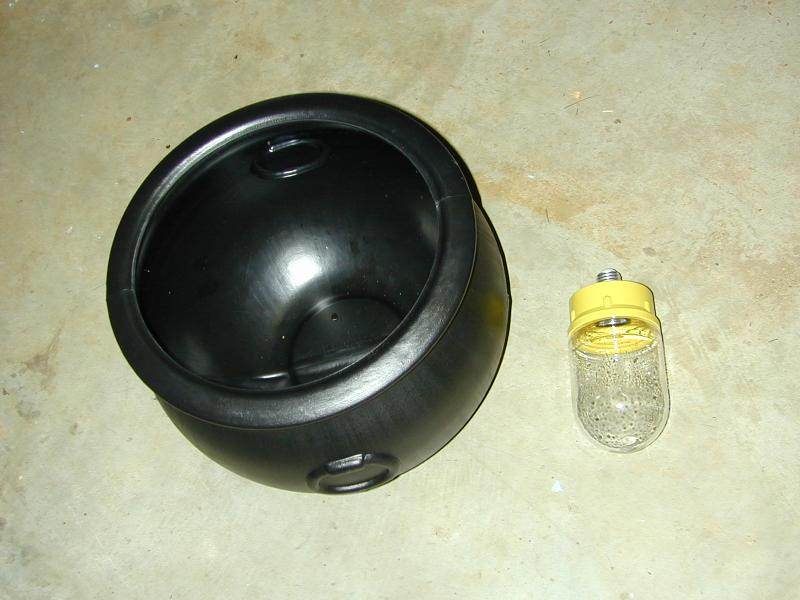
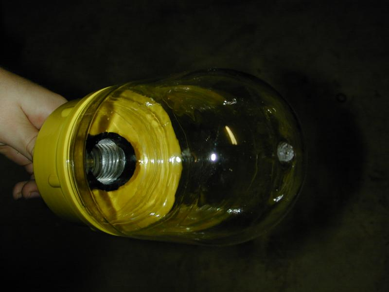
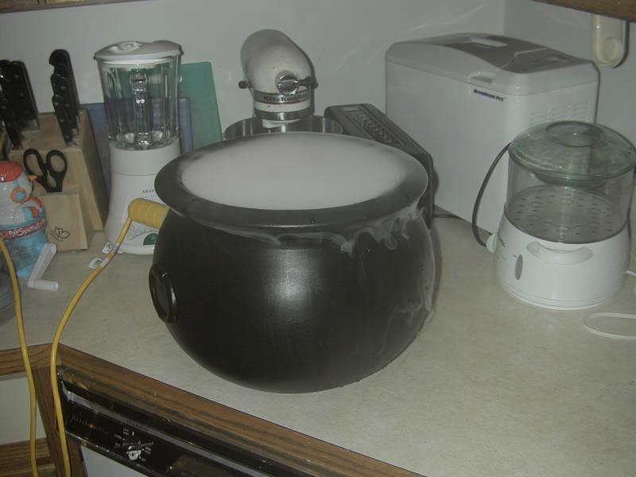
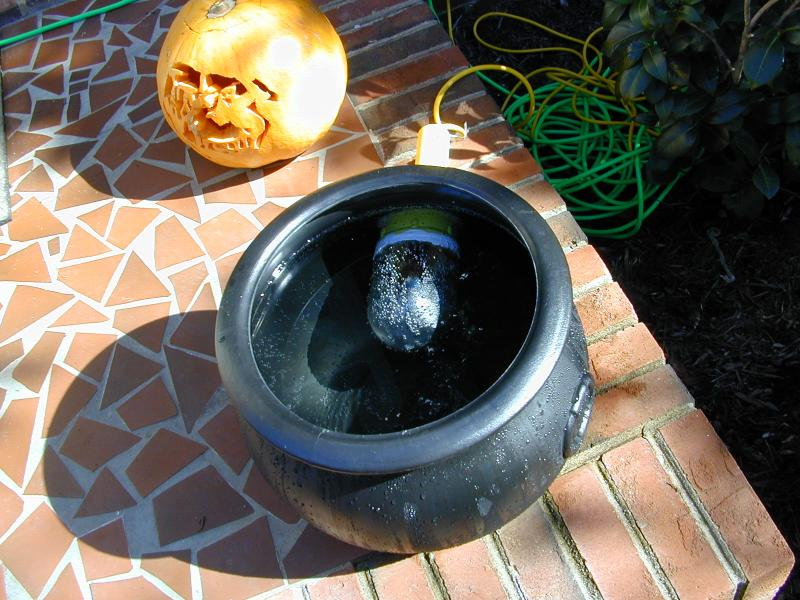
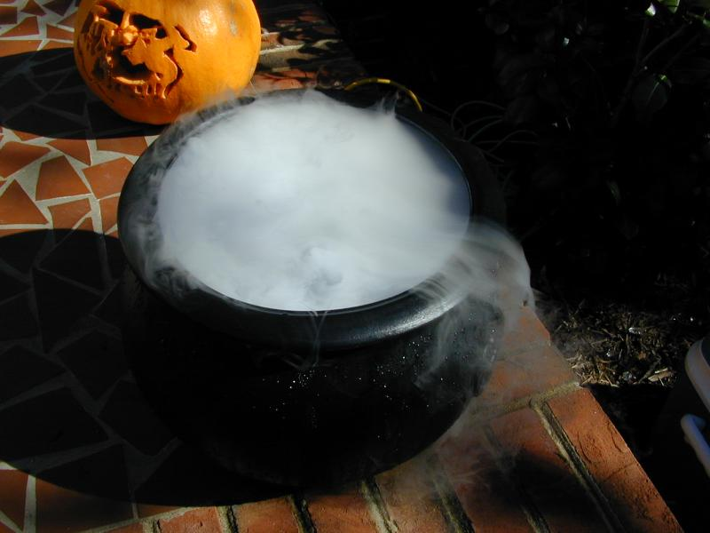

The Bubbling Cauldron was built from a plastic caudlron, available from any Halloween supply store, and an industrial safety light enclosure.
In 2004, I added a bird bath heater. It has low heat output, so the plastic doesn't melt, but adds more heat than the lightbulb.
Each year the industrial safety light enclosure fills with water, even though it
is sealed with silicone.


The safety light enclosure was sealed with silicon sealer. Here is an initial test run. The lamp provides enough heat to keep the water from freezing.

Below is a view with the cauldron filled, but without dry ice present. Note the white sealer around the base of the lamp enclosure.

